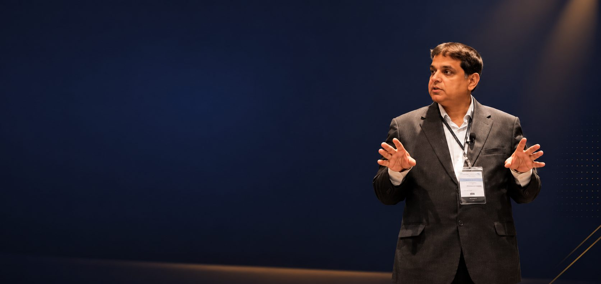
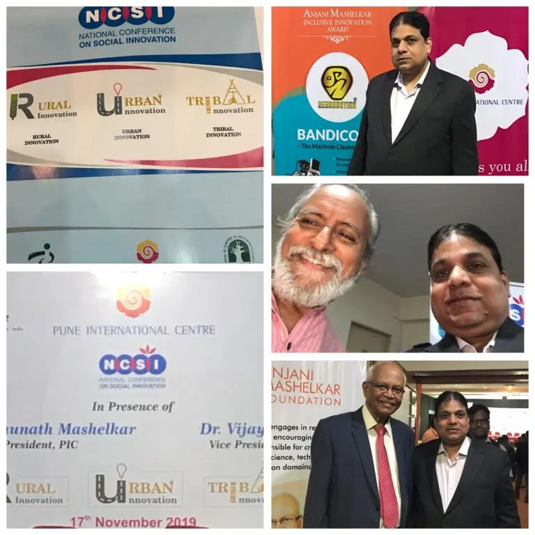
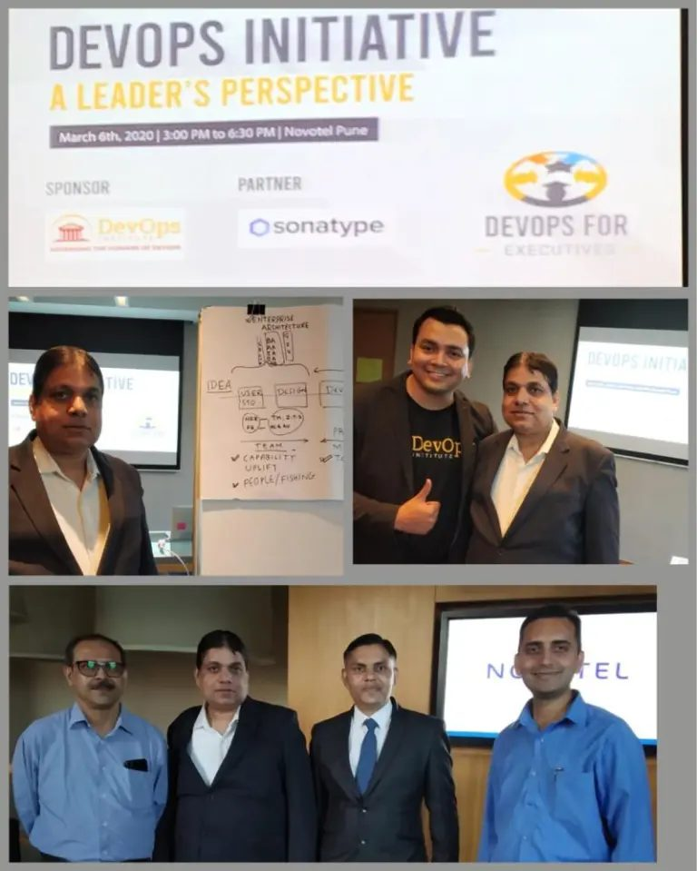
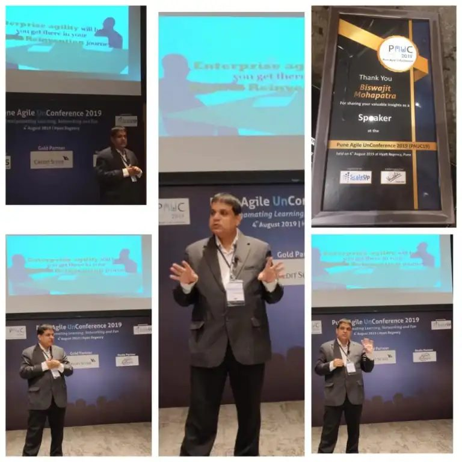

Professor · Director, Speech Lab
The science behind how we speak.
Dr. Biswajit Mohapatra is a professor of cognitive and communication sciences at Ashfield University, where he directs the Speech Lab. His research explores how people produce and understand spoken language, and how that understanding might shape more natural human–AI communication. He is also the author of a memoir, The Long Table.
Lab News
Lab Notes
Occasional updates on publications, talks, and lab milestones.
- New paper accepted at the International Symposium on Speech Processing
- Speech Lab welcomes two new PhD students
- Dr. Mohapatra named Fellow of the Fictional Linguistics Society
- Lab receives placeholder grant for spoken dialogue research
Moments
Around the Lab

Anjani Mashelkar Inclusive Innovation Award, National Conference on Social Innovation
November 2019
“DevOps Initiative: A Leader’s Perspective,” Novotel Pune
March 2020
Pune Agile UnConference 2019 (PAUC19), Hyatt Regency Pune
August 2019